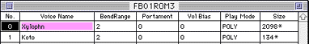
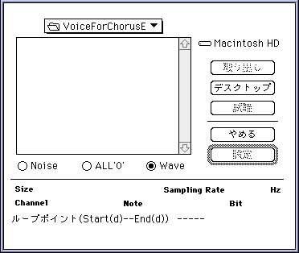
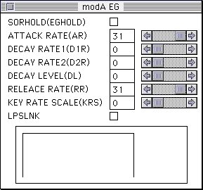
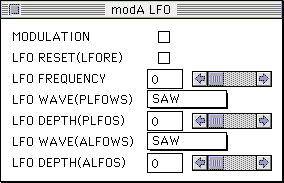
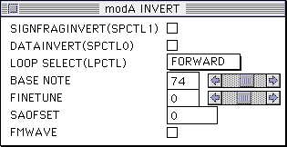
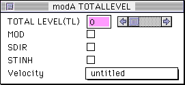
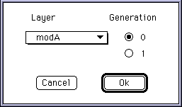

<HTML>
<HEAD>
<TITLE>&lt; 3/ 5&gt;�T�E���h�J���m�E�n�E�W/3.���F�֘A��TONE EDITOR�Ɋւ���</TITLE>
</HEAD>
<BODY>
<HR>
<A HREF="../../../index.htm#sndt"></A>
��<A HREF="../../index.htm#prog">SOUND Manual</A>
��<A HREF="index.htm">�T�E���h�J���m�E�n�E�W</A>
<HR>
<B>��
<A HREF="p02_10.htm">�߂�</A>�b
<A HREF="p04_10.htm">�i��</A>��</B>
<HR NOSHADE>
<B>�T�E���h�J���m�E�n�E�W</B>
<H2 ALIGN="CENTER">��3�́@���F�֘A��TONE EDITOR�Ɋւ���</H2>
<HR NOSHADE>

<ul>
<li>TL+VolBias�̉��Z���ʂ��ő�𒴂��Ă͂Ȃ�܂���B���̏ꍇ�́A�h���C�o��Status�ɃG���[�i���o�[��Ԃ��A�V�[�P���X���Đ����܂���B<br>
��̓I�ɂ́ATL��0�̏ꍇ�AVolBias��0�ȉ��łȂ���΂Ȃ�܂���B<p>

<li>�x���V�e�B�J�[�u���G�f�B�^�̕\����A���j�A�ɂȂ��Ă��Ă��A������́A���̒ʂ�ɂȂ�Ȃ����Ƃ�����܂��B�x���V�e�B����ɂ‚��ẮA�����܂Œ�����ڈ��ɂ��Ă��������B<p>

<li>���F�G�f�B�^�Ńp�����[�^�̃c���������Č��������l��ύX����ƁASCSI�̒ʐM�����܂������Ȃ��Ȃ�AMAC����т₷���̂ł�߂Ă��������B����MIDI�������͕p�x�������Ȃ�܂��B<p>

<li>�\�t�gLFO��MIDI���W�����[�V����wheel�ɂ��ON/OFF���䂪�ł��܂���B<p>

<li>�k�e�n�̃��W�����[�V�����g�`�̓T�C���E�F�[�u�݂̂ł��B<p>

<li>FM�ɂ‚���<br>
�@1�‚̃X���b�g���L�����A�ɂ����W�����[�^�ɂ����R�Ɋ��蓖�Ă邱�Ƃ⎩�ȕϒ��i�Z���t�t�B�[�h�o�b�N�j���”\�ł��B���ȕϒ������ł��[�����p�ɑς���g�`�͏o�͉”\�ł��̂ŁA���̏ꍇ�́A�ő�32���|����FM�o�͂Ƃ������ƂɂȂ�܂��B������FM���F�𑽗p����ƁA�ǂ����Ă����삪�x���Ȃ�”\��������܂��B<p>

<li>TONE�G�f�B�^��VOICE�̃p�����[�^�APLAY MODE�̓|�����[�h�݂̂ɑΉ��BPOLY�ȊO�́AMONO,PORTA, LEGATO, L&P�͖����ł��B TONE EDITOR�Őݒ�ł��Ă��T�E���h�h���C�o�������̃��[�h�ł͐��������삵�܂���B�����m�[�g�I�t���Ȃ����̃o�O�ɂȂ�܂��̂Ő�΂Ɏg�p���Ȃ��ł��������B<p>

<li>�{�C�X�E�B���h�E��PORTAMENT TIME�͋@�\���Ă��܂���B�ݒ肷��ƃg���u���̂��ƂɂȂ�܂��̂Őݒ肵�Ȃ����������ł��B�����̑Ή����܂���������ł��B<p>

<li>PEG�̓���ɂ����‚��̃o�O������A�v�����悤�ȓ�������Ȃ����Ƃ�����܂��B<p>

<li>TONEEditor�́A�g�[���f�[�^�̏d���ɂ��f�[�^�ʂ̑������ӂ������߁AAIFF�f�[�^���t�@�C�����ŎQ�Ƃ��Ă��܂��B�‚܂�A���ꉹ�F�f�[�^���̑��̃��C���[�Ɠ���AIFF�f�[�^��I������ƃf�[�^�͓ǂݍ��܂��ARAM�ɐ�ɓǂݍ��񂾉��F�Ɠ����ݒ���s���܂��B�ł�����A��������g�[���f�[�^�Ɏ�荞��AIFF�t�@�C����g�`�G�f�B�^���Ŕg�`�ҏW���Ă��A�t�@�C�����������Ȃ�΃g�[���G�f�B�^�͐V���ɕҏW����AIFF�f�[�^��ǂݍ��܂��g�[���f�[�^�͍X�V����܂���B�ǂݍ��܂������ꍇ�̓t�@�C������ς��邩�A��x�Ⴄ�f�[�^����荞��ł���ēx�ǂݍ��ݒ����Ă��������B<br>
�Ȃ��A�g�`�����L���Ă���VOICE�̓T�C�Y�̂��ƂɃA�X�^���X�N(*)���\������܂��B<p>


<p>

<li>Tone�G�f�B�^�́A�f�t�H���g��SndSimulator�ŃJ�����g�ɂȂ��Ă���T�E���h�}�b�v�́A���FBANK0�̃A�h���X�ƃT�C�Y���Q�Ƃ��܂��B���FBANK0�Ԗڂ̃T�C�Y���������ݒ肵�Ă���ꍇ�ASCSI�̃G���[���ł邱�Ƃ�����܂��B���FBANK0�̃T�C�Y��傫���ݒ肵�Ă��������B�܂����FBANK0�ȊO�ɐݒ肷�邱�Ƃ��”\�ł��B���F�f�[�^�̃G�f�B�b�g���͍쐬�p�Ƃ��Đݒ艹�FBANK�̃T�C�Y��傫���Ƃ����}�b�v���‚����Ďg�p���邱�Ƃ������߂��܂��B<br>
�܂�Tone�G�f�B�^�́A���F�t�@�C����Open�����Ƃ��ɕK�����F�f�[�^�̃T�E���h�{�b�N�X�ւ̓]�����s�����Ƃ��܂��B<br>
�i�ēx�]������K�v������ꍇ��Preference���j���[��Download�ɂčs���Ă��������B�j<p>

<li>�f�p�ȋ^��<br>
�@MIDI���͂ɂ���ĉ��F�p�����[�^��ύX�����̂�TONE�G�f�B�^�̉�ʏ�ł͓����܂܂ɂȂ��Ă��܂��B�����TONE�G�f�B�^��SCSI�ʐM��SOUND BOX�ɑ΂��ĕύX�����̃f�[�^�𑗂�܂����AMIDI�ɂ���ĕύX���ꂽ�f�[�^���F������TONE�G�f�B�^�̉�ʏ�ɔ��f������d�l�ɂ͂Ȃ��Ă��Ȃ�����ł��B<p>

<li>�g�[���G�f�B�^��PAN�|�W�V����������(Ver2.06)�A������<p>

L16,L15,L14,L13,L12,L11,L10,L9,L8,L7,L6,L5,L4,L3,L2,L1,C,R1,R2,R3,R4,R5,R6,R7,R8,R9,R10,R11,R12,R13,R14,R15<p>

�ƕ���ł��܂����A��������<p>

L15,L14,L13,L12,L11,L10,L9,L8,L7,L6,L5,L4,L3,L2,L1,C,C,R1,R2,R3,R4,R5,R6,R7,R8,R9,R10,R11,R12,R13,R14,R15<p>

�ł��B�P�Ȃ�\���~�X�ł����A���ӂ��K�v�ł��B�܂����o�[�W����(Ver2.07)�ł��̃o�O�͏C������܂��B<p>

<li>TONE EDITOR�̓�̃p�����[�^�ɂ‚���<p>

<b>�g�`�ǂݍ��݃E�C���h�E���J���Ƃ��̂悤�ɂȂ��Ă��܂��B</b><p>
<p>
��̃��W�I�{�^���̈Ӗ��́A<p>
<dl compact>
<dt>�EALL'0'
<dd>�����ł܂���B
<dt>�ENOISE
<dd>�V���[�Ƃ����܂��B�����Ɏg���Ă݂Ă��������B
</dl>
<p>
<b>EG�E�C���h�E���J���Ƃ��̂悤�ɂȂ��Ă��܂��B</b><p>
<p>
<dl compact>
<dt>�EEGHOLD 
<dd>�`�F�b�N����ƁAAR�̒l�͖�������ő剹�ʂ���EG���͂��܂�܂��B
<dt>�EKEY RATE SCALE
<dd>0-14�܂Œl���傫���Ȃ�قǃL�[�X�P�[�����O�̌��ʂ������Ȃ�܂��B���ӂ���_�́A15�ł̓L�[�X�P�[�����O���ʂ�������Ȃ����Ƃł��B
<dt>�ELPSLNK
<dd>LooP StartLiNK�̗�
�`�F�b�N���Ȃ���EG�̌W����LoopStart�̃|�C���g��EG�̂����֌W�B
�`�F�b�N�����LoopStart�̈ʒu�ɂ��EG�̌��ʂ��ω�����B
</dl>
�i�ڍׂ́A�uHardware Manual/SCSP���[�U�[�Y�}�j���A��/<B><A HREF="../../../hard/scsp/hon/p04_22.htm">EG���W�X�^</A></B>�v���Q�Ƃ��Ă��������j�B<p>
<p>
<b>LFO�i�n�[�h�ɂ����́j�E�C���h�E���J���Ƃ��̂悤�ɂȂ��Ă��܂��B</b><p>
<p>
<dl compact>
<dt>�EMODULATION
<dd>MIDI��Control Change1�Ԃ̃��W�����[�V�����f�v�X�̒l�ɂ��ALFO�̃I���I�t���ł��܂��B<br>
0�ŃI�t�A1-127�ŃI���ɂȂ�A�[���̃R���g���[���͂ł��܂���B
<dt>�ELFO RESET
<dd>�m�[�g�I���̓x��LFO�̔g�`�����Z�b�g����A���������ϒ����X�^�[�g���܂��B
</dl>
<p>
<b>INVERT�E�C���h�E���J���Ƃ��̂悤�ɂȂ��Ă��܂��B</b><p>
<p>
<dl compact>
<dt>�ESAOFSET
<dd>Start AddressOFfSET�̗���PCM�g�`��Start Address�ɏ������ޒl�ɑ΂��ăI�t�Z�b�g������������̂ł��BDSP�̃R�[���X�Ȃǂ̃G�t�F�N�g���g�p����ꍇ�ɁA���W�����[�V�����p�̔g�`�̈ʑ������炵�Ă��˂点���肷��Ƃ��ȂǂɎg�p�B<br>
����̓T�E���h�h���C�o���Q�Ƃ��Ă��Ȃ��̂ŁA��������Ă����Ӗ��ł��B
<dt>�EFMWAVE
<dd>�`�F�b�N����ƁA�ʏ��FM�ϒ���3�g���̃T�C���g�ōs���Ƃ�����A1�g���ōs���܂��B�f�[�^���ق�̏�������ȊO�����b�g�͂���܂���B���낢��l���Ă݂Ďg��Ȃ����������ł��傤�B
<dt>�ESPCTL1, SPCTL0
<dd>�ʏ�g�p���܂���̂ŁA�`�F�b�N���Ȃ��ł��������B
</dl>
<p>
<b>TOTAL LEVEL�E�C���h�E���J���Ƃ��̂悤�ɂȂ��Ă��܂��B</b><p>
<p>
<dl compact>
<dt>�EMOD
<dd>DSP�̕ϒ��g�`�p�ɂ‚����p�����[�^<br>
�܂��A���ʂ͂‚������Ƃ͂Ȃ��ł��B
<dt>�ESDIR
<dd>SoundDIRect�̗�<br>
EG��LFO���Ȃ�ɂ�������Ȃ��ŁAPCM�g�`�����̂܂ܖ‚�܂��B���ʂ��ő剹�ʂ̂܂܂ŕω����܂���B<br>
SH2�������Sequence Volume�̌��ʂ��󂯕t���Ȃ��̂ŁA�`�F�b�N���Ȃ����������ł��BInvision�쐬�̈ꕔ�̉��F�̓`�F�b�N����Ă��܂����ASequence Volume���g�������ꍇ�Ȃǂ͊O���Ȃ���΂����Ȃ����Ƃ�����܂��̂Œ��ӂ��Ă��������B<br>
�܂��A�ŋ߃m�C�Y�̔������錴���炵�����Ƃ��킩��܂����̂ŁA�`�F�b�N���Ȃ��ق��������ł��B
<dt>�ESTINH
<dd>STackWrite INHibit   �X�^�b�N�ւ̏������݋֎~�B�ʏ�̓`�F�b�N���Ȃ��p�����[�^�ł��B
</dl>
<p>
<b>FM�E�C���h�E���J���Ƃ��̂悤�ɂȂ��Ă��܂��B</b><p>
<p>
<dl compact>
<dt>�Egeneration
<dd>0��1���ł����A�C�ɂ��Ȃ��ł��������B0�ŃI�b�P�[�B<br>
�i�ڍׂ́A�uHardware Manual/SCSP���[�U�[�Y�}�j���A��/
<B><A HREF="../../../hard/scsp/hon/p04_23.htm">FM�ϒ����W�X�^</A></B>�����
<B><A HREF="../../../hard/scsp/hon/p04_fm1.htm">FM�����������g�p����ɂ�������</A></B>�v���Q�Ƃ��Ă��������j�B<p>


</dl>
</ul>

<HR NOSHADE>
<B>��
<A HREF="p02_10.htm">�߂�</A>�b
<A HREF="p04_10.htm">�i��</A>��</B>
<HR>
<A HREF="../../../index.htm#sndt"></A>
��<A HREF="../../index.htm#prog">SOUND Manual</A>
��<A HREF="index.htm">�T�E���h�J���m�E�n�E�W</A>
<HR>
<ADDRESS>Copyright SEGA ENTERPRISES, LTD., 1997</ADDRESS>
</BODY>
</HTML>
